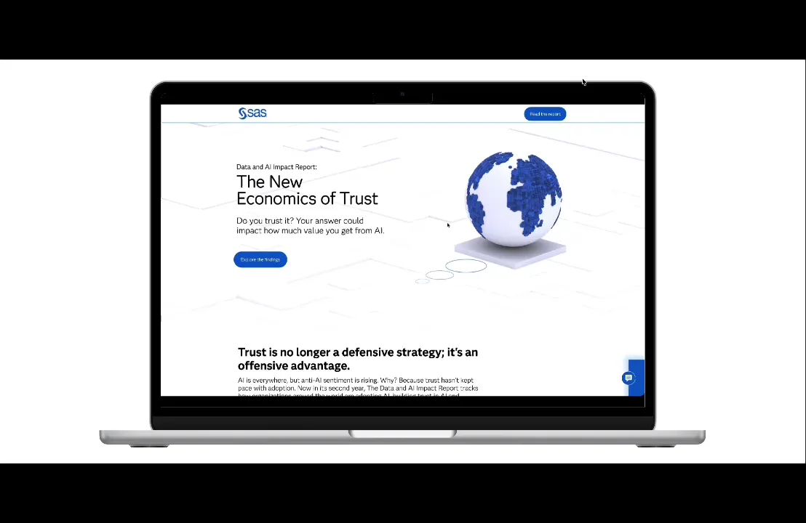

local
SAS AI Impact Report
Designing SAS’s flagship Data and AI Impact Report hub, from concept to sas.com

01Context
A summer internship that ended with the flagship report.
I joined SAS’s Marketing department as a Summer Design Engineer Intern. The role was extended into a year-round position spanning both design and the frontend code that ships live on sas.com.
My first project was rebuilding SAS’s customer success story templates in Figma as a production-ready prototype, balancing brand requirements against AEM’s technical limits and accessibility compliance. It doubled as an unofficial test of brand fluency. After a few rounds, I could tell what felt like SAS and what didn’t without being told. The templates and a redesigned header utility menu shipped live on sas.com, gathering 50k+ views.
That’s when my manager started trusting me with more, and it led to the report hub this case study is about.
02Problem
A flagship report, a one-week deadline, and no room for lo-fi.
I was handed SAS’s Data & AI 2026 report hub to own end-to-end: full layout, component architecture, and interaction design, from concept through engineering.
The first iteration was due in a week. That was too tight for sketching or low-fidelity rounds, so whatever I showed first had to already look and behave like SAS.
How might we turn a research report into something readers explore and share, and get a credible first version up in a week?
03Research
Last year’s report, and a brand I already knew by feel.
With a week on the clock, research meant working from what already existed. My only reference was the previous year’s report page, and the brand fluency I had built on the customer success templates did the rest.
04Solution
An editorial “Instrument & Ink” hub, live on sas.com.
The final hub is live on sas.com. It pairs an editorial “Instrument & Ink” visual direction with a survey interactive that runs on real questions from the actual report, and a shareable trust-profile card at the end.
I went straight into high fidelity and delivered a full design after one day, using only last year’s report page as a reference. My manager told me afterward that he fully trusted my work and was impressed by how fast I’d picked up SAS’s design language. Everything after that was refinement, through iterative prototyping, until the Instrument & Ink direction landed.
Idea to design
- Day 0Brief: own the 2026 report hub, first iteration due in one week.
- Day 1Full high-fidelity design delivered, built from last year’s page.
- [Day ?]Iterative prototyping lands the Instrument & Ink direction.
- [Day ?]Survey interactive and trust-profile card working.
- [Date ?]Live on sas.com.
Where Figma sits
- Last year’s page
- Figma
- [Prototype / agent?]
- VS Code
- AEM
- sas.com
Overruling the AI
A tool I built for myself
05Scenarios
How a reader moves through the hub.
-
A reader takes the survey
They answer the same questions SAS asked in the actual report.
Their answers build a trust profile, so the findings read as being about them.
-
A reader shares their result
At the end, they get a trust-profile card made for sharing.
The report travels further than the page.
-
[A third reader?]
06Learnings
Speed came from trust, and trust came from fluency.
Delivering a full design in a day only worked because I had already learned SAS’s design language on smaller projects. The real through-line of this internship wasn’t any single deliverable, but the trust I built, project by project. It started with a manager testing whether I understood the brand well enough to work inside it, and it ended with him handing me a flagship report and stepping back.
That trust is also what turned a summer internship into a year-round role. Going into my next role, I want to start further along that curve: less time earning the benefit of the doubt, and more time doing the ambiguous, high-stakes work outright.